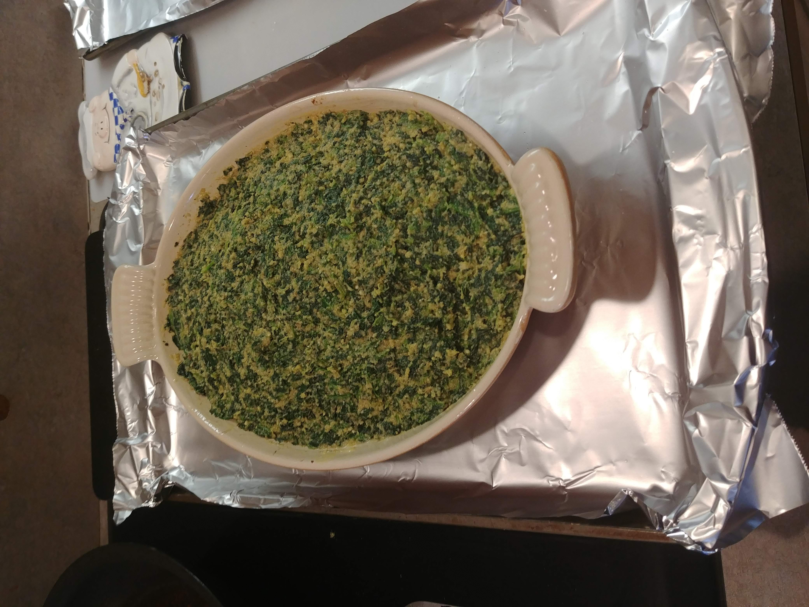

Chicken Rockefeller

Ingredients
- 1½ lb chicken tenders
- 1 pkg frozen spinach (10 oz)
- ½ C butter, melted (1 stick or 4 oz)
- ½ C seasoned breadcrumbs
- ½ C plain breadcrumbs
- ¼ C Parmesan, grated
- ¼ tsp Tabasco sauce
- ½ tsp Worcestershire sauce
- ½ tsp salt
- ¼ tsp pepper
- ½ tsp thyme
- ½ tsp minced garlic
- 3 green onions, chopped
- 3 eggs, slightly beaten
- ½ C Teriyaki sauce
- 1 tbs hot sauce
- 1 tbs rice wine
- 1 tsp garlic powder
- 2 tbs olive oil
- 2 tbs butter
- 1 C vegetable stock
Directions
- Marinate Chicken: Remove the central tendon from chicken tenders. Season with salt, pepper, garlic powder, hot sauce, and rice wine. Marinate 2-12 hours.
- Brown Chicken: Heat olive oil and butter until very hot. Brown chicken on both sides (do not cook through). Transfer to a 9x13" pan and set aside.
- Prepare Spinach Topping: Cook spinach per package directions and drain well. Mix with butter, breadcrumbs, Parmesan, garlic, seasonings, and eggs.
- Bake: Spread spinach mixture over the chicken and bake at 400°F for 30 minutes, until cooked through and set.
The Gumbo Page
Michael Fritsche
mbf@fritsche.org